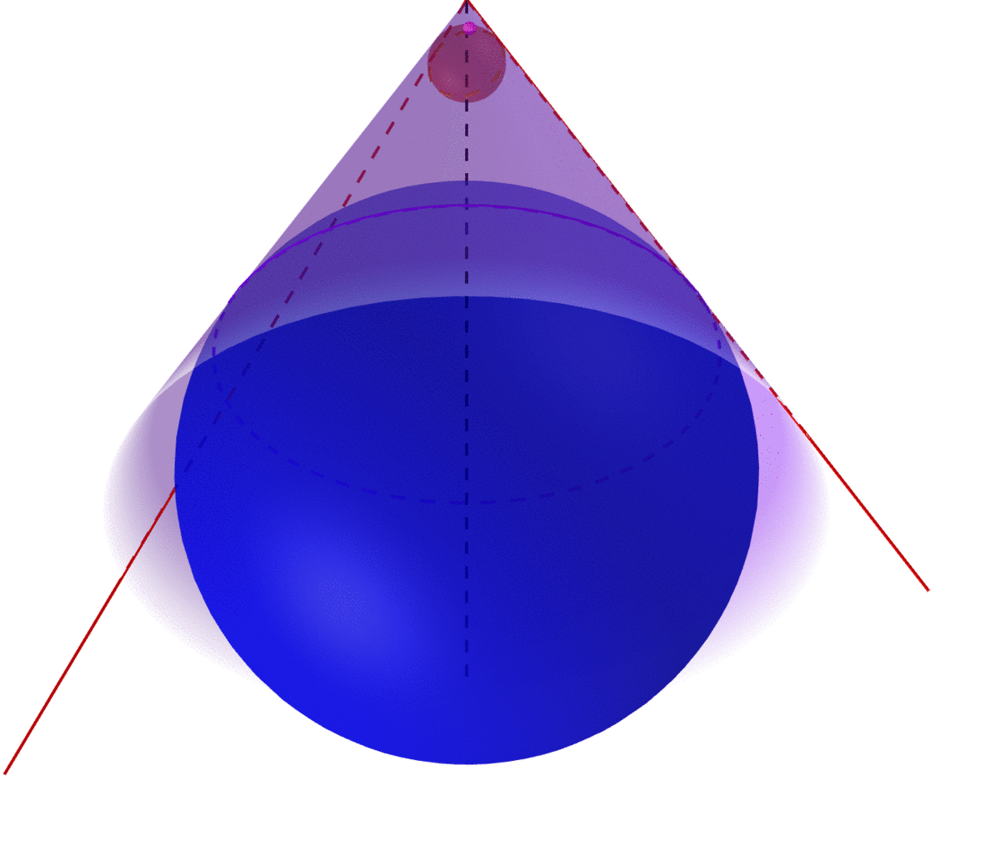
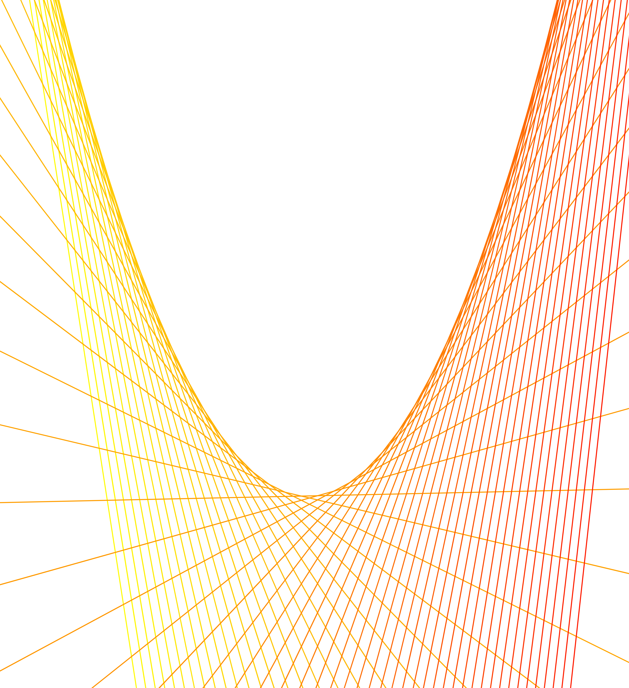
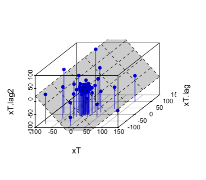

15 Optimum Approximation
The adjective word optimum and the noun approximation reflect two philosophical, one secular and one sacred, attitudes towards a closeted world. Suppose the representation was thought of relating to the omniscience of God; in that case, the approximation should distract our attention from omnipotences to a milieu of bounded beings who are continuously driven by the operations with imperfect, limited scopes.366 If bounded operations are defined in a proper space (a vector space with defined norms and linear structures), we can also call these bounded beings continuous beings. The preference of aiming for “optimum” as bounded beings is metaphysical: it is believed that optimality relates to evidence of imperfection of the Creator’s wisdom.367 The metaphysical roots of the principle of extremes (principle of least action in science and principle of maximum utility in social science) can date back to Aristotle’s statement: “Nature does nothing in vain.” It can be interpreted as follows. If there is a purpose in the nature of having imperfection, then it should lead to the disclosure of the perfect means. Later, Newton (1846) wrote the following sentence as the first rule of his reasoning in Philosophy. “We are to admit no more causes of natural things than such as are both true and sufficient to explain their appearances.” Newton (1846) commented on this rule by writing, “Nature is pleased with simplicity and affects not the pomp of superfluous causes.”
Our world is too complex, while our life-time, our intellectual scales, and our physical abilities are too limited compared to the orders of magnitudes of such complexity. We have neither the knowledge nor the computational facility required to formulate all the terms correctly in a system of equations for understanding the universe, the earth, the society, or even ourselves. On the other hand, the logical machinery, together with the axiomatizations of laws and orders, has established a closeted limited realm within which the procedures and subroutines of bounded beings make explicit the advantages of natural modularities and hierarchical organizations to achieve constructive triumphs.
The ideology descending from optimum approximation is reductionism. It allows us to move from an intractable situation with a full set of elements to an easy-going place in the absence of non-principal ones. Unlike the holism flavor wrapped in Leibniz’s representation, the approximating thing is imperfect so that the ontological identity no longer holds.368 If we set the ontological identity as \[f =\sum_{i=1}^{\infty} \langle f, \phi_i\rangle \phi_i,\] then the approximation is intended to reduce the synthesis to, say a combination of \(N\) principal objects, \(\sum_{i=1}^{N} \langle f, \phi_i\rangle \phi_i\) by hoping that the approximating function can still reflect the causal relation of \(f\). However, with the approximation, the remaining skeleton of the representational problem preserves conceptual relations, approaches to the original norms, and provides understandable cognitions and constitutions that can be optimally embodied and socialized by bounded beings.
15.1 Approximating Systems
One guiding principle in model development is Occam’s razor: “keep it simple.” More precisely, the model should be no more complicated than is necessary to represent the principal features. The intention of approximation is to replace some complicated system with a new system, one that is simpler and easier to work with, at the price of some (hopefully small) difference between the two systems. The new system is called an approximating system.
There are two critical criteria in using the approximation as a razor: first, how much nicer (or simpler) is the approximating system? Second, how similar is the approximating system to the original (or the true) one? Of course, the answers to these two questions depend on the exact meanings of nicer and similarity, which vary according to the context. The analyses of giving precise measurements to these two criteria are tied to the notations of norms.369 Recall that in one of the simplest approximations, the Taylor series, if the function \(f:\mathbb{R}\rightarrow \mathbb{R}\) is \(n\)-th order differentiable, then we have an \(n\)-th order polynomial approximation \(p_n(x)=\sum_{i=1}^{n} c_i(x -a)^{i}\) where \(c_i\) is the \(i\)-th order differentiation of \(f(x)\) evaluated at \(x=a\). This approximation is only good when the error, namely \(|f(x)-p_n(x)|\), is small. Here the norm, namely the absolute value, gives a measurement of the error.
In the infinite-dimensional space, the norm is a special functional mapping from a vector space to the non-negative real number field, and it shares some similarities with the non-negative (real-valued) linear functionals. The following table makes the comparison.370 If we replace the linearity in point 3 with the condition \(\mathbf{T}(f+g)\leq \mathbf{T}(f)+\mathbf{T}(g)\), the non-negative linear functional \(\mathbf{T}\) is called the sub-additive functional.
| Definition | Norm | Non-negative linear functional |
|---|---|---|
| 1. | Positive definiteness, non-degeneracy: | Positive definiteness, non-degeneracy: |
| \(\|f\|\geq0\) for all \(f\in\mathcal{V}\), and \(\|f\|=0\) if and only if \(f=0\). | \(\mathbf{T}(f)\geq0\) for all \(f\in\mathcal{V}\), and \(\mathbf{T}(f)=0\) if and only if \(f=0\). | |
| 2. | Multiplicativity: | Multiplicativity: |
| \(\|af\|=|a|\times\|f\|\) for all \(f\in\mathcal{V}\) and scalars \(a\). | \(|\mathbf{T}(af)|=|a|\times|\mathbf{T}(f)|\) for all \(f\in\mathcal{V}\). and scalars \(a\). | |
| 3. | Triangle inequality: | Linearity: |
| \(\|f+g\|\leq\|f\|+\|g\|\) for \(f,g\in\mathcal{V}\). | \(\mathbf{T}(f+g)=\mathbf{T}(f)+\mathbf{T}(g)\) for \(f,g\in\mathcal{V}\). |
In between the linear functionals and norms in the infinite-dimensional vector space lies the inner product because the inner product always gives rise to a norm \(\|f\|=\sqrt{\langle f, f\rangle}\), and always acquires the linear property in a Hilbert space, \(\mathbf{T}(f)= \langle f, \cdot \rangle\). The only difference between the norm and the inner product is that functional defined by a norm only focus on the distance (a real value) while the functional defined by an inner product focus on both the distance and angle (between two points).371 Notice that the orthogonality (90 degree angle) defined by the inner product cannot be specified only by the norms. To see this, notice that the orthogonality is characterized by the generalized Pythagoras’ theorem: \[\|f+g\|^{2}=\|f\|^2 +\|g\|^2.\] The equality holds for every orthogonal pair \(f\) and \(g\) from an inner product space. But this equality is a special case of \[\begin{align*} \|f+g\|^2 &= \langle f+g, f+g \rangle\\ &= \|f\|^2+\|g\|^2 + 2\langle f, g\rangle \end{align*}\] when \(\langle f, g\rangle=\|f\|\|g\|\cos90^{\circ}=0\) (see (10.3)). In other words, the definition of orthogonality makes use of the angle information contained in the inner product \(\langle \cdot, \cdot \rangle :\mathcal{V}\times\mathcal{V}\rightarrow \mathbb{R}\). Thus, we can say that the vector space attached to the norm structure requires less specifications than the inner product structure, and thus the norm structure is more general than the inner product structure.
One important motivation for extending the attention from the inner product structure to the norm is that we can confront a “bigger” dual that is complete. We discussed in chapter 14.4 that the dual spaces of the Hilbert spaces or the finite-dimensional vector spaces preserve structures from the original ones. But in general, a dual space is “bigger” than its original space. A “bigger” often brings in additional complications. But if the vector space is attached to the norm, the “bigger” size allows its dual space to makes the completion of itself.
- A vector space \(\mathcal{V}\) endowed with a norm on \(\mathcal{V}\) is called the normed vector space, denoted by \((\mathcal{V},\|\cdot\|)\). The dual normed space \(\mathcal{V}^{*}\) consists of all the continuous linear functionals of the normed vector space. When the dual space \(\mathcal{V}^*\) is equipped with the supremum norm or the infimum norm372 Note that definitions given in (15.2) and (15.4) are simply the normalized versions of (15.1) and (15.3), respectively. The equivalence between (15.1) and (15.3) gives a duality that holds for the functions and their bounds. Such a duality is analogous to the one in the inner product space, i.e., the duality between the basis function and Fourier series coefficient. Examples will be given in sec[?] \[ \begin{align} \|\mathbf{T}\| &= \sup \left\{ \frac{|\mathbf{T}(f)|}{\|f\|} \,:\, f\in\mathcal{V},\ \right \} \tag{15.1}\\ &= \sup_{ f\in\mathcal{V}}\frac{|\mathbf{T}(f)|}{\|f\|}=\sup_{ f\in\mathcal{V},\, \|f\|=1}|\mathbf{T}(f)| \tag{15.2}\\ &= \inf \left\{ M \,:\, \frac{|\mathbf{T}(f)|}{\|f\|}\leq M,\, f\in\mathcal{V} \right\} \tag{15.3}\\ & = \inf_{ f\in\mathcal{V},\, \|f\|=1, |\mathbf{T}(f)|\leq M} M \tag{15.4} \end{align}\] for any linear functional \(\mathbf{T}\in\mathcal{V}^*\), then the dual normed space is a complete normed space (even if \(\mathcal{V}\) is not complete). A complete normed space is also called the Banach space.
An inner product space is a particular kind of normed vector space. So the Hilbert space is a particular kind of Banach space.
Equivalence of the supremum norm and the infimum norm
The supremum and infimum on the real number field make sure that a continuous function over a bounded interval \([a,b]\) always has its maximum and minimum. The supremum norm or the infimum norm offers a strict criterion for assessing the continuity.373 We have seen in figure 14.4 that a convergent sequence of continuous functions may not preserve the continuity under the \(l_2\)-norm. Hence, the space of all continuous functions \(\mathcal{C}([a,b])\) under the \(l_{2}\)-norm is incomplete. But if we assess the continuity using the supremum norm, we can see that the functions in the convergent sequence are all discontinuous as \[\sup_{x\in [0,\pi]} f_n(x)= 1\, \\ \sup_{x\in [-\pi,0)} f_n(x)= 0\] for any \(n\in\mathbb{N}\). Also for the infimum norm, the discontinuity appears at \(1/n\), as for any \(n\in\mathbb{N}\) \[\inf_{x\in [1/n,\pi]} f_n(x)= 1 \\ \inf_{x\in [-\pi,1/n)} f_n(x)= 0.\] Thus, the function in figure 14.4 should not belong to the space \(\mathcal{C}([a,b])\) under the supremum norm or infimum norm. In fact, \(\mathcal{C}([a,b])\) becomes a complete normed space, namely a Banach space, under the supremum norm or infimum norm. The completion of the dual normed space is due to this strict criterion: if the functionals under the best scenario and the worst scenario are bounded/continuous according to the supremum norm or the infimum norm, all the other linear functionals should also be bounded/continuous.
Note that the dual normed space is complete even though the original normed space is not. This feature is useful. As many approximation problems cannot find an exact answer in the original setting, people have to switch to the dual normed space where the “completion” of the space guarantees the existence of the solution. For example, if a system \(\mathbf{A}\mathbf{x}=\mathbf{b}\) consists of \(n\) linear equations but only \(k\) unknown variables (\(k<n\)). Then the system is an overdetermined system. That is, no solution \(\mathbf{x}^*\) exists for \(\mathbf{A}\mathbf{x}=\mathbf{b}\). To resolve the problem, one needs to reformulate an approximating system. Suppose that the approximating system is to make the residual vector \(\mathbf{A}\mathbf{x}-\mathbf{x}\) as “small” as possible, and this system is solvable under some functional operation. The solution, say \(\hat{\mathbf{x}}\), will not belong to the set containing the original object but some other set.374 Let \(\mathbf{x}\) belong to the vector space \(\mathbb{R}^{k}\). The solution vector \(\hat{\mathbf{x}}\) usually is from the space \(\mathcal{L}(\mathbb{R}^{k},\mathbb{R}^{k})\), a set of all linear operators mapping from \(\mathbb{R}^{k}\) to \(\mathbb{R}^{k}\). The linear operator \(\hat{\mathbf{x}}\) consists of linear functionals \(\hat{x}_1, \dots, \hat{x}_k\). So the solutions \(\hat{x}_1, \dots, \hat{x}_k\) are from in the dual normed space. In other words, each \(\hat{x}_i\) of the solution vector is a functional belonging to the dual normed space rather than a scalar. In particular, if the solution set of the approximating system belongs to the dual normed vector space, we expect that the solution will always exist. So we call the solution of the approximating system the approximation.
To fulfill the goal of pushing the solution set to a Banach space, when we model an approximating system, we often consider the setup to be solvable by one continuous linear operator or a sequence of them. Also, we hope that the norms of these operators should approximate the unit value so that these approximations have the tendencies to preserve the norms of the “solutions” in the original system.
Formally speaking, solving an approximating system depends on the “hat” operator \(\hat{(\cdot)}:\mathcal{V}\rightarrow\mathcal{V}^{*}\), namely \(\hat{(\cdot)} \in \mathcal{L}(\mathcal{V},\mathcal{V}^{*})\) where \(\mathcal{L}(\mathcal{V},\mathcal{V}^{*})\) denotes the set of all continuous linear mapping from \(\mathcal{V}\) to \(\mathcal{V}^{*}\).375 The hat operator emerged in several fields under different names. The successive series started in physics (quantum position measurement) around the 1920s, then it spread to operation research (optimizer), statistics and information theory (point estimator), economics and finance (pricing operator). Indeed, there is a hidden inter-connection among these subjects. All their intentions are trying to approximate the real-world phenomena (the quantum movements, the transportation flows, the observable samples or the receiving signals, and changes of commodities) with some analytical systems that are believed to be solvable (eigensystem, linear programming, likelihoods/entropies, and supply-demand models). The hat operator did a wonderful job as it can always provide a “solution” to any of these real-world problems. However, many people are apparently ignoring (or perhaps unaware) the fact that these “solutions” given by the dual, and blindly worship some of these operators as “the” solutions of the real phenomena. On many occasions, we want the hat operator to preserve the norm such that \(\|\hat{f}\|=\|f\|\) for every \(f\in\mathcal{V}\).
All approximations can be conducted in either one-step or multiple-steps. Let’s consider two representative examples.
One-step approximation
The approximation \(\hat{\mathbf{x}}=(\mathbf{A}^{\top}\mathbf{A})^{-1}\mathbf{A}^{\top}\mathbf{b}\) of the system \(\mathbf{A}\mathbf{x}=\mathbf{b}\) is a hat operator. It is also the solution of the following approximating system of minimizing the residual \(\mathbf{A}\mathbf{x}-\mathbf{b}\) in terms of the \(\ell_2\)-norm: \[\min_{\mathbf{x}}(\mathbf{A}\mathbf{x}-\mathbf{b})^\top (\mathbf{A}\mathbf{x}-\mathbf{b}).\] To see this, the norm \((\mathbf{A}\mathbf{x}-\mathbf{b})^\top (\mathbf{A}\mathbf{x}-\mathbf{b})\) is a quadratic term. By taking a second derivative of the norm with respect to \(\mathbf{x}\), we have \(\mathbf{A}^{\top}\mathbf{A}\geq0\). According to the optimality criterion given in chapter 7.3, we know that any \(\mathbf{x}\) that can attain zero for the first derivative of the norm will give the minimum of the norm. The first derivative is \(2\mathbf{A}^\top (\mathbf{A}\mathbf{x}-\mathbf{b})=0 \Leftrightarrow \mathbf{A}^\top\mathbf{A}\mathbf{x}=\mathbf{A}^\top\mathbf{b}.\) By inverting \(\mathbf{A}^\top\mathbf{A}\) on both sides, we have the solution \(\hat{\mathbf{x}}=(\mathbf{A}^{\top}\mathbf{A})^{-1}\mathbf{A}^{\top}\mathbf{b}\). Note that this solution exists even if \(\mathbf{A}\) is not a square matrix (the number of unknowns and the number of equations do not match). That is to say, the solution \(\hat{\mathbf{x}}\) may or may not be the solution of \(\mathbf{A}\mathbf{x}=\mathbf{b}\).
Sequential approximation
Consider a dynamical system of simultaneous equations: \[u_{t}(x_{j})=\sum_{s=1}^{n}p_{js}u_{t-1}(x_{s}),\, j=1,\dots n,\] where \(u_t(\cdot)\) stands for an unknown function at time \(t\), \(x_{j}\) is the state value of the input of the function, \(p_{js}\) is from an \(n\times n\) probability transition matrix \(\mathbf{P}=[p]_{js}\). The system can be written in matrix form \[\mathbf{u}_t=\mathbf{P}\mathbf{u}_{t-1}.\] Because \(\mathbf{u}_t(\cdot)\) is an unknown vector given by an unknown function, we need to approximate \(\mathbf{u}_t(\cdot)\) by some tractable candidate. Let the approximation at \(t\)-step be \(\hat{\mathbf{u}}_t= [\langle \mathbf{c}_t, \phi(x_1)\rangle, \dots, \langle \mathbf{c}_t, \phi(x_n)\rangle]^\top\), where \(\phi(\cdot)\) is the basis function, and \(\mathbf{c}_t\) is the coefficient vector. The approximating system is \[\begin{align*} \mbox{at time }t: & \,\, \hat{\mathbf{u}}_t= [\langle \hat{\mathbf{c}}_t, \phi(x_1)\rangle, \dots, \langle \hat{\mathbf{c}}_t, \phi(x_n)\rangle]^\top \\ \mbox{ where } \hat{\mathbf{c}}_t \mbox{ is from } &\,\, \min_{\mathbf{c}_t} \| \hat{\mathbf{u}}_t - \mathbf{P}\hat{\mathbf{u}}_{t-1}\|\\ \mbox{at time }t+1: & \, \, \hat{\mathbf{u}}_{t+1}= [\langle \hat{\mathbf{c}}_{t+1}, \phi(x_1)\rangle, \dots, \langle \hat{\mathbf{c}}_{t+1}, \phi(x_n)\rangle]\top \\ \mbox{ where } \hat{\mathbf{c}}_{t+1} \mbox{ is from } &\,\, \min_{\mathbf{c}_{t+1}} \| \hat{\mathbf{u}}_{t+1}- \mathbf{P}\hat{\mathbf{u}}_{t}\|\\ \vdots & \end{align*} \] Note that we have a sequence of hat operators \(\{\hat{\mathbf{u}}_1, \hat{\mathbf{u}}_2,\dots, \hat{\mathbf{u}}_t\}\) for this system up to time \(t\) rather than a single one.
By now, we know that if we can present the original system by an approximating one whose solution is defined on the dual normed space, the solution for the approximating system always exists. But we haven’t known yet how to specify a general routine to set up the approximating system.
Recall the previous routine of representing an object in the inner product space. We project any object of the inner product space onto a basis system that spans the space. The basis system is known; therefore, they are tractable for presenting the object. Similarly, an approximating system emerges when we project some object that belongs to an “unapproachable” set onto an “approachable” set. The minimizations in both above examples are actually the metric projection operators for the normed vector space.
For a normed vector space \((\mathcal{V},\|\cdot\|)\), the operator \(\mathbf{P}_{\mathcal{Y}}(f)\) is called metric projection operator if it yields the multi-valued operator between the point \(f\in\mathcal{V}\) and the nearest point(s) \(\hat{f}\in\mathcal{Y}\subset\mathcal{V}\): \[\mathbf{P}_{\mathcal{Y}}(f)=\hat{f},\,\,\mbox{with }\, \|f - \hat{f}\|=\inf_{g\in\mathcal{Y}}\|f-g\|\] where the set \(\mathcal{Y}\) is projected set.
If we consider \(f\) as the original system of interests, setting up an approximating system is equivalent to defining a metric projection operator of \(f\) on the a priori selected set \(\mathcal{Y}\) where the systems are all solvable or computable (or understandable) by human beings.376 The projected set \(\mathcal{Y}\) includes the approximating system but does not necessarily \(f\).
Notice that the metric projection operator is a multi-valued operator. The multi-valued operator allows us to project the original system onto multiple approximating ones.377 There could be multiple \(\hat{f}_i\) such that \[\inf_{g\in\mathcal{Y}}\|f-g\|=\\ \|f-\hat{f}_1\|=\|f-\hat{f}_2\|=\cdots\] That is to say, you can project \(f\) to several directions, and multiple nearest points are corresponding to this projection. Thus the metric projection operator is \(\mathbf{P}_{\mathcal{Y}}(f)=\{\hat{f}_{i}\}\). But the cost of this generality is that it is ambiguous to proceed on which system. To avoid ambiguity, people often shift their attention to the set \(\mathcal{Y}\) that can generate a single-valued metric projection operator, namely a unique nearest point from the projection: \[\mathbf{P}_{\mathcal{Y}}(f)=\hat{f},\,\,\mbox{with }\, \|f-\hat{f}\|=\min_{g\in\mathcal{Y}}\|f-g\|.\] A technical discussion about how to characterize \(\mathcal{Y}\) to achieve this goal will be given later. For the moment, I should give a remark about the role of uniqueness. Looking for a unique optimum under the maximization/minimization rather than multiple optima under the supremum/infimum somehow relates to the visions towards the world’s order. There are various arguments in favor of the unique optimal outcome.378 When the light rays are refracted in a glass window, they bend and follow the path that minimizes their travel time. A solid body moves along the direction with the least resistance through a fluid. Soap films seek to minimize their surface area, and adopt a spherical shape. While the circle shape is also the one on which Queen Dido formed the longest loop in order to enclose the largest possible territory. Amongst all the arguments, perhaps the most fundamental one comes from monotheism, where one can derive a unique logical limit of the universal order.
Descartes’ proposition of NOT MANY GODS
15.2 Optimization and Inequalities
Figure 15.1: The union of infinite many nested balls gives a cone
How to characterize the unique optimum? Monotheism attaches a pyramid to the hierarchical chain of beings. In this pyramid, this chain’s order follows a monotonic structure, and at the ultimate end, there sits one and only one being, the first cause. This kind of pyramidal shape provides a primitive way of characterizing the uniqueness for the optimum. Different mythological symbols in several religions advertised such a characterization. Moreover, the mythology tells us that the pyramid is far from static. The positions of the beings give them the incentives (called potential energies in physics) to triggers the movements within the chain. Behind these tendencies, there were forces and power (called kinetic energies in physics) that were actually functioning on shatter or re-order the pyramid. Consequently, ascending and descending transitions in some subsets of the pyramid happened to be the themes in various myths and religious stories. They provided variational melodies on the static staffs.379 Also, they delivered several ideas/clues on how to preserve the principal order in the plays without losing attractive variations and on how to implant different seeds on the followers’ thoughts (so that the “prophets” in those sects were able to “forecast” the development of some projected movements in reality).
When we retreat to the mathematical aspect, the characterization of the unique optimality is about the (dynamical) utilization of the inequality to shape a conical type subset where things are in order. In a nutshell, a real-valued inequality provides a conical shape where the projection can attain one “peak.”380 The inequalities of beings evolve under some functions or operations during the movements. In myths, most principal characters had to (at least pretended to) continuously adapt themselves to the movements so that their orders can be preserved in the storylines). The dynamical storylines preserved the (principal) subset of maintaining the chain of the inequality and pointing out the ascending/descending direction of the desired final stage. This property turns out to be useful if we allow the projection operator to keep “stirring” the system (so that it can make iterative moves to approximate the object). Some special shape reserves the order, and the inequality serves as an engine force to guide the projections (and avoid them blowing up the iterations). This kind of idea was extensively studied in the optimization theory, a subject being largely concerned with the maximization or minimization of real-valued function(al)s over a given subset.381 In 1920s, the military squad, Blackett’s Circus, applied the theory to military operations and developed a formal discipline now called operation research. Since then, the optimization theory has been applied to many other fields. For example, it helps economists to quantify the ideology about the laissez-faire by the physiocrats or the invisible hand by Smith to describe the movements of achieving an “optimal” situation of some economic system based on the principle of maximizing individual happinesses or utilities.
In the real number field \(\mathbb{R}\), one can easily attain the optimum (maximum or minimum), as \(\mathbb{R}\) is an ordered field where the inequality order is well defined. For example, if the minimum point in a set \(\mathcal{X}\subset \mathbb{R}\) exists, then the inequality \[x^{*}\leq x \mbox{ for all } x\in\mathcal{X}\] immediately defines the minimum \(x^{*}\).
Things become non-trivial for the vectors. When we compare the vector \([3,1]\) with \([2,2]\), the ordering axioms given in chapter 2.3 are violated. The order \(3>1\) for the first entities in both vectors contradicts with the order \(1<2\) for the second ones. One resolution is to map the vectors onto the real number field where the ordering structure re-emerges on the image of the mappings. For a function \(f:\mathbb{R}^k\rightarrow\mathbb{R}\), if the inequality \(f(\mathbf{x})\geq f(\mathbf{x}^{*})\) holds for all \(\mathbf{x}\in \mathbb{R}^{k}\), then we can say that \(x^{*}\) gives the minimum value of the function \(f\).382 There are infinitely many choices for selecting such a function \(f\). For example, by \(l_2\)-norm, \([3,1]\) is \(\sqrt{10}\), and \([2,2]\) is \(\sqrt{8}\). Thus one can order \([3,1]\) and \([2,2]\) by this norm (the size of a vector).
But the inequality \(f(\mathbf{x})\geq f(\mathbf{x}^{*})\) doesn’t give any information about the “order” around the point \(\mathbf{x}^{*}\). More specifically, it doesn’t tell what kind of neighborhood of \(\mathbf{x}^{*}\) can endow the optimal \(f(\mathbf{x}^{*})\). We need an informative inequality that can reveal some specific topological structure around the vector \(\mathbf{x}^{*}\).
Figure 15.2: A curve and its tangent lines
Figure 15.2 reveals an interesting “duality” between points (of a curve) and their tangent lines. The shape of the curve can be specified not only by the function, but also by the collection of derivatives of this function. Recall that derivatives are about local behaviors. Given that the optimality of the function induces the inequality \(f(\mathbf{x})\geq f(\mathbf{x}^{*})\), can this “duality” disclose another inequality that makes use of the local information?
- Convexity and variational inequality : Consider a set \(\mathcal{Y}\). Assume that \(\mathbf{y}_i,\mathbf{y}_j\in\mathcal{Y}\) and \(\alpha \in [0,1]\). If \[\alpha \mathbf{y}_i + (1-\alpha)\mathbf{y}_j \in \mathcal{Y},\] then the set \(\mathcal{Y}\) is called a convex set. In a finite-dimensional vector space \(\mathcal{V}=\mathbb{R}^{k}\), suppose that \(f:\mathcal{Y}\rightarrow \mathbb{R}\) is differentiable on the convex set \(\mathcal{Y}\subset\mathcal{V}\), and the minimum exists such that383 Or say \[\mathbf{y}^{*} = \arg\min_{\mathbf{y}\in\mathcal{Y}} f(\mathbf{y}),\] where \(\arg\) stands for the argument of the function. \[f(\mathbf{y}^{*}) = \min_{\mathbf{y}\in\mathcal{Y}} f(\mathbf{y}),\] then we have the variational inequality384 Or say \[\langle \nabla f(\mathbf{y}^{*}),\:\mathbf{y}^{*}\rangle \leq \langle \nabla f(\mathbf{y}^{*}),\:\mathbf{y}\rangle.\] \[\left\langle \nabla f(\mathbf{y}^{*}),\:\mathbf{y} - \mathbf{y}^{*} \right\rangle \geq 0\] where \(\nabla f(\mathbf{y}^{*})\) is the gradient of \(f\) evaluated at \(\mathbf{y}^{*}\).
Variational inequality
The inequality set up an additional equilibrium condition regarding the optimum. The gradient \(\nabla f(\mathbf{x}^{*})\) is about the effect of an infinitesimal change of \(f(\mathbf{x})\) around \(\mathbf{x}^{*}\). The inequality of this infinitesimal change \(\langle \nabla f(\mathbf{y}^{*}),\:\mathbf{y}^{*}\rangle \leq \langle \nabla f(\mathbf{y}^{*}),\:\mathbf{y}\rangle\) points out the direction on \(\mathcal{Y}\) by which the linear function \(\langle \nabla f(\mathbf{y}^{*}),\:\cdot \rangle\) can move towards its minimum.
The variational inequality also provides a standard way of constructing fixed point iterations. By modifying the inequality a little bit, we have \[\left\langle \left(\mathbf{y}^{*}- \epsilon\nabla f(\mathbf{y}^{*}) \right)- \mathbf{y}^{*},\:\mathbf{y} - \mathbf{y}^{*} \right\rangle \leq 0\] for any arbitrary positive real number \(\epsilon\). The inequality implies the following fixed point condition385 The gradient \(\nabla f(\cdot)\) is a linear functional, so it is not necessarily in \(\mathcal{Y}\). But given that \(\epsilon\) is small, we can replace \(\mathbf{y}^{*}- \epsilon\nabla f(\mathbf{y}^{*})\) with a projection of \(\mathbf{y}^{*}- \epsilon\nabla f(\mathbf{y}^{*})\) onto \(\mathcal{Y}\), i.e. \(\hat{\mathbf{y}}=\mathbf{P}_{\mathcal{Y}}(\mathbf{y}^{*}- \epsilon\nabla f(\mathbf{y}^{*}) ) \in \mathcal{Y}\) so that \[\left\langle \hat{\mathbf{y}} - \mathbf{y}^{*},\:\mathbf{y} - \mathbf{y}^{*} \right\rangle \leq 0.\] Since the above inequality holds for any \(\mathbf{y}\in\mathcal{Y}\) and \(\hat{\mathbf{y}}\in\mathcal{Y}\), we may have \[\left\langle \hat{\mathbf{y}} - \mathbf{y}^{*},\:\hat{\mathbf{y}} - \mathbf{y}^{*} \right\rangle \leq 0\] that is only true when \(\hat{\mathbf{y}} = \mathbf{y}^{*}\). \[\mathbf{y}^{*}=\mathbf{P}_{\mathcal{Y}}(\mathbf{y}^{*}- \epsilon\nabla f(\mathbf{y}^{*}) )\] where \(\mathbf{P}_{\mathcal{Y}}(\cdot)\) is the metric projection onto the subset \(\mathcal{Y}\). The iteration of this fixed point condition can be written as \[\mathbf{y}_{n+1}=\mathbf{P}_{\mathcal{Y}}(\mathbf{y}_n- \epsilon\nabla f(\mathbf{y}_n) ).\]
In fact, building up a metric projection operator on the convex set and setting up a variational inequality are two sides of one coin. To grab some intuition of this statement, note that the metric projection of some element in \(\mathcal{V}\) onto the subset \(\mathcal{Y}\subset \mathcal{V}\) defines the inequality of \(\hat{f}\in\mathcal{Y}\) such that \[\|f-\hat{f}\|\leq\|f-g\|\quad\mbox{for any }g\in\mathcal{Y}.\] Meanwhile, the norm itself is a function(al) whose image is the real number field. Thus, the variational inequality may come out as a “dual” effect of some “differentiation” of the norm.
Here are some technical details. First of all, notice that if \(\mathcal{V}\) is a real-valued Hilbert space386 To attain this inequality, we need to explicitly restrict our attention to the real-valued inner product, as the complex-valued inner product distorts the ordering structure. and \(\mathcal{Y}\subset\mathcal{V}\), then the metric projection (of the subset \(\mathcal{Y}\)) \[\mathbf{P}_{\mathcal{Y}}(f)=\arg\min_{g\in\mathcal{Y}}\|f-g\|, \mbox{ for } f\in\mathcal{V}\] shares the same property of the projection operator defined for the whole Hilbert space \(\mathcal{V}\) (\(\mathbf{P}_{\mathcal{V}}\) in chapter 14.3), namely \[\mathbf{P}_{\mathcal{Y}}\mathbf{P}_{\mathcal{Y}}=\mathbf{P}_{\mathcal{Y}}.\] So the projection of some object onto a subset in the Hilbert space is about finding the minimum distance between the object and this subset.387 If \(\mathbf{P}_{\mathcal{Y}}\mathbf{P}_{\mathcal{Y}}\neq \mathbf{P}_{\mathcal{Y}}\), there would be more than one value for a single projection. It contradicts the uniqueness requirement for the minimum operation. Assume that \(\mathbf{P}_{\mathcal{Y}}f=g_1^{*}\) and \(\mathbf{P}_{\mathcal{Y}}\mathbf{P}_{\mathcal{Y}}f=g_2^{*}\) are two different projection points. Then there would be \[\|f-g_1^*\| \neq \|f-g^*_2\|.\] We have either \[\|f-g_1^*\| > \|f-g^*_2\|\\ \mbox{or } \|f-g_1^*\| < \|f-g^*_2\|\] If \(\|f-g_1^*\| > \|f-g^*_2\|\), then \(\mathbf{P}_{\mathcal{Y}}(f)=g_2^{*}\) contradicts with \(\mathbf{P}_{\mathcal{Y}}(f)=g_1^{*}\). A similar argument holds for the other case. The metric projection is also a hat operator because it preserves the norm of the projected object (\(\|\mathbf{P}_{\mathcal{Y}}\|=1\)).
Secondly, we want to see a minimum in the real-valued Hilbert space can be obtained by a variational inequality if the neighborhood of the minimum is convex. For a convex subset \(\mathcal{Y}\) of the real-valued Hilbert space \(\mathcal{V}\), let \(f\in\mathcal{V}\) and \(g\in\mathcal{Y}\), and let \(\hat{f}=\mathbf{P}_{\mathcal{Y}}(f)\in\mathcal{Y}\) be the projection operator, then the following two definitions are equivalent:
metric projection operator: \(\hat{f}=\mathbf{P}_{\mathcal{Y}}(f)=\arg\min_{g\in\mathcal{Y}}\|f-g\|\).
variational inequality: \(\langle f-\hat{f},\, \hat{f}-g\rangle\geq0\) or say \(\langle f-\hat{f},\, \hat{f}\rangle\geq \langle f-\hat{f},\, g\rangle\)
Proof
The above statement deduces that the metric projection operator is Lipschitz continuous with the Lipschitz constant of one, called non-expansive:388 Also, the metric projection operator is monotone, in the sense that \[\langle f_1-f_2, \mathbf{P}_{\mathcal{Y}}(f_1)- \mathbf{P}_{\mathcal{Y}}(f_2) \rangle\geq 0\] for all \(f_1,f_2\in\mathcal{V}\). The monotonicity means if \(f_1(\mathbf{x})\geq f_2(\mathbf{x})\), the inequality holds under the projection, namely \(\mathbf{P}_{\mathcal{Y}}(f_1)(\mathbf{x}) \geq \mathbf{P}_{\mathcal{Y}}(f_2)(\mathbf{x})\). \[\| \mathbf{P}_{\mathcal{Y}}(f_1)- \mathbf{P}_{\mathcal{Y}}(f_2) \|\leq \|f_1 -f_2\|\] for all \(f_1,f_2\in\mathcal{V}\). This result serves as the foundation in many practical approximation exercises. As in practice, instead of approximating the “ideal” element \(f\), one often approximates the element \(f+\delta f\), where \(\delta f\) is some “variation of \(f\).” The non-expansivity says that \[\| \mathbf{P}_{\mathcal{Y}}(f + \delta f)- \mathbf{P}_{\mathcal{Y}}(f) \|\leq \|\delta f\|\] so that the error incurred in the approximation/projection is no larger than the error in the original variation. This is a desirable property for recursively approximating the object. Because in each step of the iteration, the projection will not blow up the whole scheme.
Monotonicity and non-expansivity
In particular, if the projection is orthogonal, namely \(\mathbf{P}_{\mathcal{Y}}\) is self-adjoint: \[\langle f_1, \mathbf{P}_{\mathcal{Y}}f_2 \rangle = \langle \mathbf{P}_{\mathcal{Y}} f_1, f_2 \rangle\] then the metric projection operator \(\hat{f}=\mathbf{P}_{\mathcal{Y}} f\) has the following properties389 The projection property \(\mathbf{P}_{\mathcal{Y}}\mathbf{P}_{\mathcal{Y}}=\mathbf{P}_{\mathcal{Y}}\) tells that \(\|\mathbf{P}_{\mathcal{Y}}\|=1\). By using this result, we have \[ \begin{align*} \langle \mathbf{P}_{\mathcal{Y}}f, f \rangle &= \langle \mathbf{P}_{\mathcal{Y}} \mathbf{P}_{\mathcal{Y}} f, f \rangle\\ &= \langle \mathbf{P}_{\mathcal{Y}} f, \mathbf{P}_{\mathcal{Y}} f \rangle \\ &=\|\mathbf{P}_{\mathcal{Y}}f\|^2 =\|f\|^2. \end{align*}\] \[\mbox{1. } \langle \hat{f}, f \rangle = \|\hat{f}\|^2=\|f\|^2,\,\, \mbox{2. }\langle f-\hat{f},\, \hat{f}\rangle = 0\] for any \(f\in\mathcal{V}\). The first says the norm of the hat operator is exactly the same as that of the original object. The second says that the error of the projection \(f-\hat{f}\) and the projection \(\hat{f}\) should be orthogonal to each other.390 The way of having an orthogonal projection for a convex set \(\mathcal{Y}\) in the Hilbert space is about having a conical shape of such convex set \(\mathcal{Y}\).
Definition and remark about the cone
15.3 Miscellaneous Examples: Part 1
Multiple linear regression and hyperplane
Consider the \(n\)-length data vectors from an AR(2) model \[\mathbf{x}_T = c_1\mathbf{x}_{T-1} + c_2\mathbf{x}_{T-2} + \mathbf{e}\] where \(\mathbf{e}\in\mathbb{R}^{n}\) is a vector of errors.
set.seed(2020); time = 1:50
xT.model = rep(0, length(time)); xT.model[1:2] = rnorm(1) # At t=1,2, give the initials random values
# An "explosive" AR(2)
for (t in 1:(length(time)-2)){
e = rnorm(1)
# A single law of motion / dynamical law
xT.model[t+2] = xT.model[t+1] - 1.2* xT.model[t] + e
}
xT = xT.model[3:length(time)]; # x_T
xT.lag = xT.model[2:(length(time)-1)]; # x_{T-1}
xT.lag2 = xT.model[1:(length(time)-2)] # x_{T-2}The AR(2) model tells us that \(\mathbf{x}_T\) is “generated” by two “older” vectors \(\mathbf{x}_{T-1}\) and \(\mathbf{x}_{T-2}\). Therefore, it is natural to think that \(\mathbf{x}_T\) must be in a kind of subspace of the space “generated” by \(\mathbf{x}_{T-1}\) and \(\mathbf{x}_{T-2}\). Also, you should not be surprised if I project the \(\mathbf{x}_T\) onto such a space.
By considering \([\mathbf{x}_{T-1},\mathbf{x}_{T-2}]^{\top}\) as an \(n \times 2\) matrix \(\mathbf{X}\), we can form the projection matrix \[\mathbf{P}_{\mathbf{X}}=\mathbf{X}(\mathbf{X}^{\top}\mathbf{X})^{-1}\mathbf{X}^{\top}.\] The projection property \(\mathbf{P}_{\mathbf{X}}\mathbf{P}_{\mathbf{X}}=\mathbf{P}_{\mathbf{X}}\) can be easily verified. The projection of \(\mathbf{x}_T\) gives392 Note that \[\begin{align*} & \min_{\mathbf{c}\in\mathbb{R}^2} \|\mathbf{x}_T -\mathbf{X}\mathbf{c}^{\top}\|^2 \\ &=\|(\mathbf{I}-\mathbf{P}_{\mathbf{X}})\mathbf{x}_{T}\|^2.\end{align*}\] The projection matrix comes from Fermat’s theorem for the derivative: \[\frac{\partial \|\mathbf{x}_T -\mathbf{X}\mathbf{c}^{\top}\|^2}{\partial \mathbf{c}}= 0\] whose solution is \(\mathbf{X}^{\top}\mathbf{X}\hat{\mathbf{c}}^{\top}-\mathbf{X}^{\top}\mathbf{x}_{T}=0\). We will receive more details about the meaning (and the specific derivation) of this solution. For the moment, we only need to know that \[\mathbf{X}\hat{\mathbf{c}}^{\top}=\mathbf{X}(\mathbf{X}^{\top}\mathbf{X})^{-1}\mathbf{X}^{\top}\mathbf{x}_{T}\] minimizes the norm, namely forming the metric projection. \[\mathbf{P}_{\mathbf{X}}\mathbf{x}_{T} = \hat{\mathbf{x}}_T = \mathbf{X}\hat{\mathbf{c}}^{\top} = \hat{c}_1\mathbf{x}_{T-1} + \hat{c}_2\mathbf{x}_{T-2}\] where these equalities are simply another way of presenting the Riesz representation for the projection matrix (operator).393 The hat operator \[\hat{\mathbf{c}}^{\top}=(\mathbf{X}^{\top}\mathbf{X})^{-1}\mathbf{X}^{\top}\mathbf{x}_{T}\] is analogous to the previous least square estimator in the simple linear regression. Indeed, this AR(2) is a multiple linear regression model where the regressors, the variables to be regressed on, have a number more than one. The regressors in this AR(2) model are \(\mathbf{x}_{T-1}\) and \(\mathbf{x}_{T-2}\).
X = matrix(c(xT.lag,xT.lag2),ncol=2);
# An estimate of c(1, -1.2)
chat = solve(t(X) %*% X) %*% t(X) %*% xT; chat## [,1]
## [1,] 0.9973927
## [2,] -1.1978226Figure 15.3: Project the 3-dimensional data points onto a 2-dimensional hyperplane
# plot
library(scatterplot3d)
p = scatterplot3d(xT, xT.lag,xT.lag2, type="h", angle=45, color="blue", highlight.3d=TRUE, pch = 16)
p$plane3d(c(0,t(chat)), draw_polygon = TRUE) # The approximating plane for the points in R^3 Although \(\mathbf{x}_{T}\), \(\mathbf{x}_{T-1}\), and \(\mathbf{x}_{T-2}\) are three \(n\)-length vectors, the entires of these vectors are merely “randomized” observations generated by a single deterministic dynamical law \[x_{t} = C_1 x_{t-1} + C_{2}x_{t-2}\] that gives the deterministic dynamical relation amongst three successive periods \(t\), \(t-1\), and \(t-2\) for the process \(\{x_t\}\). The error of each period contaminates the law. Therefore one only observes the real values of the system given by the data vectors rather than dynamical law.394 Recall that a vector of data may come from a single function. Similarly, one can view each of the three vectors of this process as a “point” in some Hilbert space. We will come back to it in ch[?].
Figure 15.3 shows the projection of \(\mathbf{x}_{T}\) locates closely to the plane \(x_t = \hat{c}_1x_{t-1} + \hat{c}_2 x_{t-2}\) given by the dynamical law. Although the law consists of three variables, \(x_t\) is linearly dependent on \(x_{t-1}\) and \(x_{t-2}\). Thus, two variables are sufficient to represent the plane. Basically, the multiple linear regression conducts a projection onto the space one dimensional lower than the original space.395 Usually, people write a multiple linear regression as \[Y = \sum_{i=1}^{k} \beta_i X_i +\varepsilon.\] The variable \(Y\) together with \(k-1\) regressors \(\{X_i\}_{i=1}^{k}\) forms a \(k\)-dimensional regression problem. We can understand that such a linear regression is to reduce some situation from \(k\)-dimension to \((k-1)\)-dimension by explaining one selected variable \(Y\) in terms of a linear combination of \((k-1)\) regressors.
Geometrically speaking, a set that is one dimensional lower than the original space and formed by a continuous linear function(al) is called the hyperplane. Let \(\mathcal{V}\) be a vector space. Given a linear function(al) \(g\in \mathcal{V}\) and a scalar \(a\) from the scalar field \(\mathbb{F}\), the set \[\mathcal{S}=\{g\in\mathcal{V}:\langle f, \,g\rangle=a, a\in \mathbb{F} \}\] is a hyperplane in \(\mathcal{V}\) determined by \(f\) and \(a\). In the previous example, the hyperplane is \[\mathcal{S}=\left\{\left[\begin{array}{c} x_{t}\\ x_{t-1}\\ x_{t-2} \end{array}\right]\in\mathbb{R}^{3}:\, \left\langle \left[\begin{array}{c} -1\\ \hat{c}_{1}\\ \hat{c}_{2} \end{array}\right]\,,\,\left[\begin{array}{c} x_{t}\\ x_{t-1}\\ x_{t-2} \end{array}\right]\right\rangle =0 \right\},\] a \(2\)-dimensional plane in \(\mathbb{R}^{3}\) determined by the \([-1, \hat{c}_{1},\hat{c}_{2}]^{\top}\) and \(0\).
Separation and non-arbitrage
When the scalar field \(\mathbb{F}\) of the hyperplane is restricted to \(\mathbb{R}\), one can use inequalities to illustrate how a hyperplane separates the space into two, i.e. \(\{f\in\mathcal{V}:\langle f, \,g\rangle \leq a \}\) and \(\{f\in\mathcal{V}:\langle f, \,g\rangle > a \}\).396 These two sets are called the half-spaces determined by the hyperplane \(\mathcal{S}\). If a subset belongs to one of this half-space, then this subset is on one side of the hyperplane.
The separation is about forming a dichotomy between the objects of interest and the rest. For example, assume that \(\mathcal{V}=\mathbb{R}^{n}\). Let \(\mathcal{Y}\in\mathcal{V}\) be a convex set. Let \(\mathbf{z}\in\mathcal{V}\) and \(\mathbf{z}\notin\mathcal{Y}\). Then exist non-zero vector \(\mathbf{p}\in\mathcal{V}\) and a real number \(a\in\mathbb{R}\) such that \[\mathbf{p}^{\top} \mathbf{y} \geq a> \mathbf{p}^{\top}\mathbf{z},\] for any \(\mathbf{y}\in\mathcal{Y}\).
Here the hyperplane \(\mathcal{S}=\{\mathbf{y}\in\mathbb{R}^{n}:\langle \mathbf{p}, \,\mathbf{y} \rangle=a \}\) strictly separates \(\mathbf{z}\) and \(\mathcal{Y}\). This result comes from the variational inequality.397 Let \(\hat{\mathbf{z}}\) be the projection of \(\mathbf{z}\) on the set \(\mathcal{Y}\), such that \(\mathbf{P}_{\mathcal{Y}}\mathbf{z}=\hat{\mathbf{z}}\in\mathcal{Y}\). The variational inequality becomes \[(\hat{\mathbf{z}}-\mathbf{z})^\top (\mathbf{y}-\hat{\mathbf{z}})\geq0\] for all \(\mathbf{y}\in\mathcal{Y}\). Let \(\mathbf{p}=\hat{\mathbf{z}}-\mathbf{z}\) and consider non-zero \(\mathbf{p}\). Let \(\mathbf{p}^{\top}\hat{\mathbf{z}}=a\). Then the inequality gives \[\mathbf{p}^{\top}(\mathbf{y}-\hat{\mathbf{z}})\geq0\Leftrightarrow \mathbf{p}^{\top} \mathbf{y} \geq a.\] On the other hand, \[\begin{align*}a- \mathbf{p}^{\top}\mathbf{z} &=\mathbf{p}^{\top}(\hat{\mathbf{z}}-\mathbf{z})\\ &=\|\hat{\mathbf{z}}-\mathbf{z}\|^{2}>0\end{align*}\] implies \(a>\mathbf{p}^{\top}\mathbf{z}\). The result follows.
In economics, the vector \(\mathbf{p}\) in the above inequalities is often interpreted as a price vector; and the set \(\mathcal{Y}\) is treated as a feasible set for production while \(\mathbf{z}\notin\mathcal{Y}\) is a non-feasible plan, i.e., the non-profitable production allocation.398 In this context, the price vector \(\mathbf{p}=\hat{\mathbf{z}}-\mathbf{z}\) can be understood as the gain (or the residual) in the projection of some impossibility onto some possibility (of course, the possible output \(\hat{\mathbf{z}}\) should be larger than the impossible \(\mathbf{z}\) to attain a positive price). Let \(a=0\), the result says \[\mathbf{p}^{\top}\hat{\mathbf{z}}=(\hat{\mathbf{z}}-\mathbf{z})^{\top}\hat{\mathbf{z}}=0,\] either \(\mathbf{p}=0\) or \(\hat{\mathbf{z}}=0\).
The development of these inequalities touches the core of the pricing theory in economics and finance. The basic idea is that if the price vector is “generated” by a convex set, a hyperplane consisting of this price vector and a vector of the pricing commodities should be able to separate some infeasible situations regarding those commodities from the feasible ones.
One typical “infeasible” or “unpleasant”" case in the financial market is the arbitrage (making something from nothing). Let \(\mathbf{A}\in\mathbb{R}^{n\times m}\), \(\mathbf{p},\mathbf{y}\in\mathbb{R}^{n}\), \(\mathbf{x}\in\mathbb{R}^{m}\), and \(\mathbf{x} \succeq \mathbf{0}\). Here \(\mathbf{x} \succeq \mathbf{0}\) means all the entries of the vector \(\mathbf{x}\) are non-negative. Suppose we assume that the price vector has a representation \(\mathbf{p}=\mathbf{A}\mathbf{x}\) with the positive value “basis” vector \(\mathbf{x}\) over \(m\) states. In that case, the matrix \(\mathbf{A}\in\mathbb{R}^{n\times m}\) can be defined as the pricing plan for \(n\) commodities under \(m\) states, or in the financial market, it can be defined as the units of \(n\) securities under \(m\) states.399 The matrix \(\mathbf{A}\) is also known as the pricing kernel.
Let \(\mathbf{y} \in \mathbb{R}^{n}\) be a production plan or a portfolio of \(n\) commodities (or securities). Having an arbitrage means have the following two cases simultaneously: \[\begin{align*} \mbox{Case I, negative profit (or negative market value): }& \quad \mathbf{p}^{\top}\mathbf{y}<0,\\ \mbox{Case II, profitable production plan (or positive payoff): }&\quad \mathbf{A}^{\top}\mathbf{y}\succeq 0. \end{align*}\]
One fundamental theory about the financial market is that there is no arbitrage when the market is efficient. In our quantitative context, this statement means if the price vector \(\mathbf{p}\) can be efficiently linearly represented by some positive vector \(\mathbf{x}\) under the linear transformation \(\mathbf{A}\), then there can only be a dichotomy between case I and case II.
This dichotomy actually comes from the following Farkas’ lemma (another dichotomy).
- Farkas’ lemma : The system I and the system II \[\begin{align*} \mbox{system I: }& \quad \left\{\mathbf{x} : \mathbf{A}\mathbf{x}=\mathbf{p},\, \mathbf{x}\succeq \mathbf{0}\right\}\\ \mbox{system II: }&\quad \left\{\mathbf{y} : \mathbf{A}^{\top}\mathbf{y} \succeq \mathbf{0}, \, \mathbf{p}^{\top}\mathbf{y}<0\right\} \end{align*} \] cannot be solved simultaneously.400 That is, if system I has a solution for \(\mathbf{x}\), then system II will have no solution for \(\mathbf{y}\), vice versa.
As you can see, Farkas’ lemma says if system I is true, then the condition \(\mathbf{p}^{\top}\mathbf{y}<0\) and \(\mathbf{A}^{\top}\mathbf{y}\succeq\mathbf{0}\) cannot both be true at the same.401 One can rule out the arbitrage opportunity if system I is true. While if system II is true, it violates the arbitrage definition. Based on these deductions, one can claim that the price given by \(\mathbf{p}=\mathbf{A}\mathbf{x}\) is a non-arbitrage price (also known as the fundamental theorem in asset pricing). There are many variations of this non-arbitrage claim, but they basically follow the same primitive logic as above.
The result behind the non-arbitrage pricing and Farkas’ lemma is a hyperplane \(\mathcal{S}=\{\mathbf{y}\in\mathbb{R}^{n}:\langle \mathbf{p}, \,\mathbf{y} \rangle=0\}\) separating system I and system II. Because system I is, in fact, equivalent to \[\mbox{system I': } \quad \left\{\mathbf{y}:\,\mathbf{A}^{\top}\mathbf{y} \succeq \mathbf{0}, \, \mathbf{p}^{\top}\mathbf{y}\geq 0\right\}.\]
Equivalence of system I and system I’
15.4 * Miscellaneous Examples: Part 2
‘Free’ market and mathematical programming
You probably realize that the previous pricing formula \(\mathbf{p}=\mathbf{A}\mathbf{x}\) does not attribute a proper economic meaning to \(\mathbf{x}\). To avoid stirring your doubts that the formula seemingly builds the price vector on top of an “\(\mathbf{x}\)”-cloud, a bunch of economists came up with a marvelous system to explain the relation between \(\mathbf{x}\) and \(\mathbf{p}\).404 To me, it is the most, if it is not the only, elegant and beautiful narration of the economic system that I have ever heard. Endowing a proper economic meaning to \(\mathbf{x}\) is to model \(\mathbf{x}\) as a variable in some economic activities. To achieve this goal, the economists decided to parameterize both systems by adding another vector \(\mathbf{c}\), called the cost vector.
Let’s recall that \[\begin{align*} \mbox{System I :}& \quad \left\{ \mathbf{x}:\:\mathbf{A}\mathbf{x}=\mathbf{p},\,\mathbf{x}\succeq\mathbf{0}\right\},\\ \mbox{System I' :}& \quad \left\{ \mathbf{y}:\:\mathbf{A}^{\top}\mathbf{y}\succeq\mathbf{0},\,\mathbf{p}^{\top}\mathbf{y}\geq\mathbf{0}\right\} \end{align*}\] are two equivalent systems that both locate on one side of the half-space created by \(\mathcal{S}=\{\mathbf{y}:\,\mathbf{p}^{\top}\mathbf{y}=0\}\). After adding the cost vector \(\mathbf{c}\), the systems become \[ \begin{align*} \mbox{Cost system :} &\quad \left\{ \mathbf{x}:\:\mathbf{A}\mathbf{x}=\mathbf{p},\,\mathbf{c}^{\top}\mathbf{x}\geq\mathbf{0}\right\},\\ \mbox{Profit system :} & \quad \left\{ \mathbf{y}:\:\mathbf{c}\succeq\mathbf{A}^{\top}\mathbf{y}\succeq\mathbf{0},\,\mathbf{p}^{\top}\mathbf{y}\geq\mathbf{0}\right\} \end{align*}\] where the meaning of \(\mathbf{c}^{\top}\mathbf{x}\) becomes the total expenditure of \(\mathbf{x}\) units, and the meaning of \(\mathbf{A}^{\top}\mathbf{y}\preceq\mathbf{c}\) is that the profitable production plan should be less expensive than the cost vector (for every entity).
Due to the parameterization, the cost and the profit system are not necessarily equivalent. The following inequality405 \[\begin{align*} \left\langle \mathbf{c},\mathbf{x}\right\rangle &=\left\langle \mathbf{x},\mathbf{c}\right\rangle \geq\langle\mathbf{x},\mathbf{A}^{\top}\mathbf{y}\rangle \\ &=\langle\mathbf{A}\mathbf{x},\mathbf{y}\rangle=\langle\mathbf{p},\mathbf{y}\rangle\geq0. \end{align*}\] \[\mathbf{p}^{\top}\mathbf{y}\leq\mathbf{x}^{\top}\mathbf{c}\] basically says that the cost system’s expenditure \(\mathbf{x}^{\top}\mathbf{c}\) is at least not less than the income \(\mathbf{p}^{\top}\mathbf{y}\) created by the profit system. So the sole purpose (for the producers) of continuing to produce goods is to make the profit and the expenditure equivalent.406 Such motivation becomes a baseline doctrine of those who are in favor of the competitive market.
Given the price and the cost vector, we consider inner products \[\mathbf{p}^{\top}\mathbf{y}^{*}=(\mathbf{x}^{*})^{\top}\mathbf{c}\] to be equal at \(\mathbf{y}^{*}\) and \(\mathbf{x}^{*}\). In other words, given \(\mathbf{p}^{\top}\mathbf{y}^{*}\) and \(\mathbf{c}\), the decrease of \(\mathbf{x}\) will make the cost system approach to the profit system. Similarly, given \((\mathbf{x}^{*})^{\top}\mathbf{c}\) and \(\mathbf{p}\), increasing the units of \(\mathbf{y}\) will make the profit system approach to the cost system. To summarize, we have \[\begin{cases} \mbox{decrease }\mathbf{x}\,: & \mathbf{p}^{\top}\mathbf{y}^{*}=(\mathbf{x}-\epsilon \delta\mathbf{x})^{\top}\mathbf{c},\\ \mbox{increase }\mathbf{y}\,: & \mathbf{p}^{\top}(\mathbf{y}+\epsilon\delta\mathbf{y})=(\mathbf{x}^{*})^{\top}\mathbf{c}, \end{cases}\] where \(\epsilon>0\) is an arbitrary small number; \(\delta\mathbf{x}=(\mathbf{x}-\mathbf{x}^{*})/\epsilon\succeq0\) and \(\delta\mathbf{y}=(\mathbf{y}^{*}-\mathbf{y})/\epsilon\succeq0\) are also known as the feasible directions of optimizing the cost system and the profit system.407 The feasible direction of \(\mathbf{x}\) consists of ‘small’ movements starting from \(\mathbf{x}\), and by moving along these directions, the system can have better off situations. Technically speaking, the set of all feasible directions of \(\mathbf{x}\) and \(\mathbf{y}\) are in the convex cones, and we are interested in the descent directions of the cone of \(\mathbf{x}\) and the ascent directions of the cone of \(\mathbf{y}\).
By forming the sequential movements along the feasible directions as metric projections through the minimization and maximization operators, we have408 The sequences \(\{\mathbf{x}_{i}\}\) and \(\{\mathbf{y}_{i}\}\) satisfying \[\begin{align*} \lim_{i\rightarrow \infty}\mathbf{c}^{\top}\mathbf{x}_{i}\rightarrow & \min_{\mathbf{x}}\mathbf{c}^{\top}\mathbf{x}^{*}\\ \lim_{i\rightarrow \infty}\mathbf{p}^{\top}\mathbf{y}_{i}\rightarrow & \max_{\mathbf{y}}\mathbf{p}^{\top}\mathbf{y}^{*} \end{align*}\] are in the feasible direction of the two systems in terms of the infimum norm (15.4) and the supremum norm (15.2), respectively: \[ \begin{align*} \min_{0\leq\mathbf{T}(\mathbf{y})\leq\mathbf{c}^{\top}\mathbf{x}} & \quad \mathbf{c}^{\top}\mathbf{x},\\ \max_{\mathbf{0}\preceq\mathbf{y}} & \quad \mathbf{T}(\mathbf{y}), \end{align*}\] where \(\mathbf{T}(\mathbf{y})=\langle\mathbf{p},\mathbf{y}\rangle=\langle\mathbf{A}\mathbf{x},\mathbf{y}\rangle\). The solutions of the problems preserve the norm of the linear function \(\mathbf{T}(\cdot)\). Thus, they are also hat operators. Moreover, the equivalence of (15.4) and (15.2) tells that these two sequences are dual. \[ \begin{split}\mbox{Cost : }\begin{cases} \min_{\mathbf{x}} & \mathbf{c}^{\top}\mathbf{x},\\ \mbox{s.t. } & \mathbf{A}\mathbf{x}=\mathbf{p},\\ & \mathbf{x}\succeq\mathbf{0}. \end{cases} & \quad\mbox{Profit : }\begin{cases} \max_{\mathbf{y}} & \mathbf{p}^{\top}\mathbf{y},\\ \mbox{s.t. } & \mathbf{0}\preceq\mathbf{A}^{\top}\mathbf{y}\preceq\mathbf{c},\\ & \mathbf{p}^{\top}\mathbf{y}\geq0. \end{cases}\end{split} \] Minimizing the cost and maximizing the income both tend to decrease the gap \[\mathbf{x}^{\top}\mathbf{c}-\mathbf{p}^{\top}\mathbf{y}\geq 0\] to zero. One can solve one of them and solve the other as a by-product. On the other hand, if either problem has been solved, then so does the other. Therefore, these two optimizations are dual and simply aim to the same target (of reducing the gap).409 Once the dual exists, and it is intrinsically connected to the primal problem. The dual problem typically forms an adversary problem with the same set of data. They provide a certificate of the optimality to each other.
Now since the cost minimization with respect to \(\mathbf{x}\) corresponds to the profit maximization with respect to \(\mathbf{y}\), we establish a concrete relation for \(\mathbf{x}\). Under this relationship, the meaning of \(\mathbf{x}\) serves as a dual variable of the portfolio \(\mathbf{y}\). If the portfolio is interpreted as a plan regarding the demand, then \(\mathbf{x}\) would be about a corresponding plan for the supply.410 Cost minimization and profit maximization are often assumed the features in competitive markets.
 Figure 15.4: Solving the income maximization problem by moving along the feasible direction
Figure 15.4: Solving the income maximization problem by moving along the feasible direction
The above problems of selecting optimal solutions from some specified sets are known as mathematical programming problems. A typical mathematical programming problem consists of a real-valued objective function and some equality and/or inequality constraints. The constraints specified a feasible set, and the objective function provides the guides for moving towards the optimal solution along the feasible directions within the set. When both the objective function and the constraints are linear, the problem becomes a linear programming problem.411 In economics, for various purposes, the objective functions are often assumed to be non-linear. For example, a famous mathematical programming problem is about utility maximization \[\mbox{Utility: }\begin{cases} \max_{\mathbf{y}} & f(\mathbf{y}),\\ \mbox{s.t. } & \mathbf{0}\preceq\mathbf{A}^{\top}\mathbf{y}\preceq\mathbf{c},\\ & f(\mathbf{y})\geq0. \end{cases}\] where \(f(\cdot):\mathbb{R}^{n}\rightarrow\mathbb{R}^{+}\) is a continuous real-valued function called utility function. To maintain the feasible set as a convex set, one has to impose some additional assumption on the function \(f(\cdot)\). One common choice is to assume that the second derivative of \(f(\cdot)\) is non-positive (see optimality condition). The feasible direction of the problem is given by some linearization of \(f(\cdot)\), i.e., \[f(\mathbf{y})\approx f(\mathbf{y}_{0})+\underset{\delta \mathbf{y}\geq0}{\underbrace{\left\langle \nabla f(\mathbf{y}_{0}),\,(\mathbf{y}-\mathbf{y}_{0})\right\rangle }},\] so that the feasible direction \(\delta \mathbf{y}\) is still contained in some cone (called the linearizing cone), and some standard linear programming techniques can solve the problem.
Solving mathematical programming problems
As you can see, getting an optimal solution from mathematical programming is to identify the optimality sequentially. The whole procedure does not rely on any external forces but merely the movements along the feasible directions. This situation is analogous to the Tâtonnement mechanism that can dynamically adjust the price based on the demand and supply gap (see chapter 8.4). Suppose pricing adjustment is about the movements of the macro-object - price. The mathematical programming provides an interpretation of the equilibrium regarding the movements of the micro-objects - individual supply and demand’s quantities given the constant price and the cost vectors.412 We will consolidate these two types of mechanisms under Aristotle’s law in CH[?]. Under the laissez-faire (free-market) doctrine, this optimality principle, namely moving towards the optimum within the feasible region, is considered a natural rule governing the individual’s decisions.
* Imaginary forces and the ‘complete market’
It is known that a linear ordinary differential equation with high order differential terms can be converted to an equivalent system of ordinary differential equations with only first-order differential terms. Let’s consider \[ \begin{align*} \mbox{2th order DE :} &\quad \frac{\mbox{d}^{2}x(t)}{\mbox{d}t^{2}}+c_{1}\frac{\mbox{d}x(t)}{\mbox{d}t}+c_{2}x(t)=0 \\ \mbox{ODE system : } &\quad \begin{cases} \frac{\mbox{d}x(t)}{\mbox{d}t}= & y(t)\\ \frac{\mbox{d}y(t)}{\mbox{d}t}= & -c_{1}y(t)-c_{2}x(t) \end{cases} \end{align*} \] where the 2nd-order differential term is converted to the variable \(y(t)\) in the new system. Two differential equations in the new system are both 1st-ordered, although the infinitesimal change of \(x\), \(\mbox{d}x(t)/\mbox{d}t\), is driven by \(y(t)\).
Second-order differentiations and bivariate systems
Following the idea of the above conversion, we can derive a similar procedure for an equivalent system of a stochastic process with the AR(2) specification.414 From a technical aspect, one has to realize that the continuous-time counterpart of the AR(2) is not exactly the 2nd order differential equation, as the discrete counterpart of a differential operator \(\mbox{d}(\cdot)/\mbox{d}t\) corresponds to \((1-\mathbf{L})\) with the lag operator \(\mathbf{L}\). In the second system, we are working on the operator \((1-\mathbf{L}/\lambda)\) including a fraction, the corresponding differential operator should be something about the fractional differentiation, but this technical concern is beyond our scope for the moment. \[ \begin{align*} \mbox{AR(2) Process : } &\quad X_{t}(\omega)-\phi_{1}X_{t-1}(\omega)-\phi_{2}X_{t-2}(\omega)=\varepsilon(\omega).\\ \mbox{System of AR(1) : } &\quad \begin{cases} Y_{t}(\omega) & =\lambda_{1}^{-1}Y_{t-1}(\omega)+\varepsilon(\omega),\\ X_{t}(\omega) & =\lambda_{2}^{-1}X_{t-1}(\omega)+Y_{t}(\omega). \end{cases} \end{align*} \] In this expression, the error random variable \(\varepsilon(\omega)\) has zero population mean and constant variance; the eigenvalues \(\lambda_{1}\) and \(\lambda_{2}\) are the roots of the polynomial of the lagged operator \[\left(1-\phi_{1}\mathbf{L}-\phi_{2}\mathbf{L}^{2}\right)=\left(\lambda_{1}-\mathbf{L}\right)\left(\lambda_{2}-\mathbf{L}\right)=0\] such that \(\mathbf{L}X_{t}(\omega)=\lambda_{i}X_{t}(\omega)\) where the process \(X_{t}(\omega)\) can be thought of as an “eigenfunction.”415 The meaning of this “eigenfunction” will become clear when we consider these processes from a Hilbert space’s perspective, see Ch[?].
The “concomitance” of these two systems comes from the following factorization \[\begin{align*} \left(1-\phi_{1}\mathbf{L}-\phi_{2}\mathbf{L}^{2}\right)X_{t}(\omega) &= \left(1-\frac{\mathbf{L}}{\lambda_{1}}\right)\left(1-\frac{\mathbf{L}}{\lambda_{2}}\right)X_{t}(\omega)\\ &= \left(1-\frac{\mathbf{L}}{\lambda_{1}}\right)Y_{t}(\omega)\\ &= Y_{t}(\omega)-\lambda^{-1}_{1}Y_{t-1}(\omega)=\varepsilon(\omega), \end{align*}\] where the second equality comes from the substitution \[Y_{t}(\omega)=(1-\lambda_{2}^{-1}\mathbf{L})X_{t}(\omega).\]
We say the system of AR(1) processes is the “concomitance” of the AR(2) process because they are two systems working as two clocks perfectly in accord while they are essentially different.416 Leibniz described “concomitance” as “deux horloges ou deux montres, qui s’accordent parfaitement”. If one observes an \(X_t(\omega)\) from either of them, one cannot tells where the \(X_t(\omega)\) comes from. Although there is one “insignificant” difference that \(\phi_{1},\phi_{2}\in\mathbb{R}\) and \(\lambda_{1},\lambda_{2}\in\mathbb{C}\), this insignificance plays no role for real-valued realizations/observations of the process \(X_t(\omega)\).
 Figure 15.5: Modeling the gold price by an AR(2)
Figure 15.5: Modeling the gold price by an AR(2)
Now let’s consider one application of AR(2). Many asset prices from the stock market can be modeled as AR(2) processes. Figure 15.5 shows the fluctuations in the gold price around eight months. The mean of the process as a constant over these eight months has been extracted. The model follows \[\mbox{Gold Price}_t = 1.2\mbox{Gold Price}_{t-1} - 0.2\mbox{Gold Price}_{t-1}\] where the increment of \(t\) is one day. The probabilities of having zeros for the estimated coefficients are rather small.
Estimate AR(2)
 Figure 15.6: Simulate the AR(2) with the concomitant systems, adding imaginary forces to the second system
Figure 15.6: Simulate the AR(2) with the concomitant systems, adding imaginary forces to the second system
The usual utilization of the estimated stochastic model is to simulate other models for understanding the quantitative contributions better. If quantitative structures can recreate the empirical patterns of interests, then the structures should incorporate some intrinsic dynamical matters about the object. Otherwise, we may doubt that some principal components may be missing in the quantification procedure.417 When we review the data in figure 15.5, we can find that there are many small fluctuations, a \(3\)-months mild decline since September 2019, then a slow climbing trend for about \(4\)-months before a steep descend and then a quick reversion at the end of March. (Global stock markets crash on March 12th due to continued concerns over COVID-19.)
set.seed(20201231)
model.time= 200;
# At time=(200-k), introduce the imaginary price
k=50;
# Store the AR(2) estimate result of the gold price for phi_1 and phi_2
ar=arima(gold.T,order=c(2,0,0));
# At t=1,2, use stock values as initials
xT.model = rep(0, model.time); xT.model[1:2] = gold.T[1:2]
# Initials in model 2 coincide with model 1
xT.model2 = dxT.model2 = rep(0, model.time); xT.model2[1:2] = xT.model[1:2]; dxT.model2[1]=xT.model[2]-xT.model[1];
# Factorization of (1-phi_1 L - phi_2 L^2) = 0
c=polyroot(c(1, -ar$coef[1], -ar$coef[2])); c ## [1] 1.117310+0i 4.369572-0ifor (t in 1:(model.time-2)){
e = rnorm(1, mean=0, sd=5) # The random force of both systems
# System one: X_{t} = phi_1 X_{t-1} + phi_2 X_{t-2} + e_t
xT.model[t+2] = ar$coef[1]*(xT.model[t+1]) + ar$coef[2]* xT.model[t] + e;
# System two:
if (t==1) {dxT.model2[2]=xT.model[3]-xT.model[2]};
# no imaginary force before the emergence
i =0;
# emergence of an imaginary force in a four-days window
if ((model.time-k)<t && t<(model.time-(k-5))) {i=2}
# Y_{t} = (lambda_{1}^{-1} + imaginary force) Y_{t-1} + e_{t},
dxT.model2[t+1] = ((1/c[2])+ complex(real = 0, imaginary = i))*dxT.model2[t] + e ;
# X_{t} = lambda_{2}^{-1}(X_{t-1})+Y_{t},
xT.model2[t+1] = (1/c[1])*(xT.model2[t]) + dxT.model2[t+1];
}
# adjust the last observation
xT.model2 = xT.model2[1:(model.time-1)]; xT.model = xT.model[2:(model.time)]
# Combine the simulates data
Sys2 = Re(xT.model2); Sys1=xT.model; Time = 1:(model.time-1); dat=data.frame(Time, Sys1, Sys2)# plot
ggplot(dat, aes(x=Time, y=Sys2)) + geom_line(col="steelblue") + geom_point(y=Sys1, col="royalblue", alpha=0.2) + xlab("System I (points) System II (line) ") + ylab("Simulated values") + theme_minimal()The result of the simulations is given above.418 The “concomitance” gradually becomes more significant after \(t=20\). Before the introduction of imaginary force at \(t=151\), the precision of the difference between the two systems goes to \(10^{-5}\). However, we should notice that the eigenvalues \(\lambda_{1}\) and \(\lambda_{2}\) correspond to the lag operators under the “eigenfunction” \(X_{t}(\omega)\). In practice, we can only have data vector \(\mathbf{x}_{T}\) as a time series rather than the underlying dynamical law intrigued by \(X_{t}(\omega)\) (recall the discussion in chapter 13.4). Therefore, \(\lambda_{1}\) and \(\lambda_{2}\) cannot simulate the exact data given in the first system, because the simulated data, the “eigenvector,” in the second system are the discretized realizations of the “eigenfunction” \(X_{t}(\omega)\), not the realizations of the first system. We can see that the standard AR(2) simulation (points in figure 15.6), although it can generate some persistent short trends and small fluctuations, cannot generate the sharp variation that occurred in figure 15.5. However, in the second simulated system, an “imaginary forced” \(2\mbox{i}\) was added on four days such that \[Y_{t}(\omega)= (\lambda^{-1}_{1}+2\mbox{i)} Y_{t-1}(\omega) + \varepsilon(\omega), \mbox{ when } 151<t<156.\] The simulated sharp variation (line in figure 15.6) is made by the four-days long “imaginary force.” The meaning of this force will be given in CH[?]. For the moment, it worth noting that the real-valued parts of these two systems are exactly concomitance at any time period, excluding the propagations caused by \(2\mbox{i}Y_{t-1}(\omega)\).
For an observer who only restricts the attention to the real numbers, these two systems are “identical” because the imaginary number is illegitimate in his/her “complete real vision.” Since this observer cannot detect the observations from which system, if the data is generated by the the second system, the observer has to be “blind” to the emergence of the imaginary force. Furthermore, even though the imaginary force started to have real-valued influences over the process after the first period (emergence), the observer is not able to explore the source of the variations. This finding can illuminate the “incompleteness” of the “free market.”
Let’s set back the imaginary numbers and reflect on the components of the real-valued “free” market. Recall that we firstly confronted trouble to interpret the meaning of \(\mathbf{x}\) in the pricing formula \(\mathbf{A}\mathbf{x}=\mathbf{p}\), then we resolved the problem by relating \(\mathbf{x}\) to \(\mathbf{y}\) through their dual roles in a mathematical programming setting where the unknown \(\mathbf{x}\) became the dual of the production output vector \(\mathbf{y}\), namely an input vector of the production. Now, if we make a quick summary of available market-related concepts, we will find out a seemingly “complete loop.” Starting with some “input” \(\mathbf{x}\), we calculate the price \(\mathbf{p}\), then under the price vector \(\mathbf{p}\) and its dual cost vector \(\mathbf{c}\), the optimality doctrine (the invisible hand) in the micro-level guides the individual participants to dismiss the supply-demand gap (the duality gap), while on the macro-level the Tâtonnement mechanism plays a similar role; afterward, the system will confront the adjusted “\(\mathbf{x}\),” and the corresponding relabelled prices, so things are back to the beginning.419 To me, it is the most, if it is not the only, profound and delicate loop in the real economics that I have ever seen.
The “loop” is self-referential, so is the theory of the “free” market. It gives a self-consistent axiomatic framework to describe market phenomena. The change of some market variables must rely on some other change of happened in the loop, and any “unexpected” event can be attributed to some disturbances caused by the coarse medium of the transmission, which the market will eventually absorb or adapt to. In other words, the model is able to consistently explain any evidence for its variables because all these variables are self-referential.
As we saw in chapter 6.5, a self-referential framework is a double-edged razor blade. It may be a powerful solver but also can lead to a paradoxical conclusion.420 Indeed, we can find out much evidence from various debates regarding economic-social issues. One useful remedy to the self-referential framework is to find out where the paradox can occur.
Gödel’s incompleteness theorem tells us that we the paradox occurs as an inferential outcome on a set of jointly inconsistent logical deduction. The simulation example of the AR(2) price processes gave us such a set.
I: “System I and System II are identical.”
II: “The price process follows one of these two systems.”
Outcome: “The price process is inconsistent with one of these two systems.”
The predicate I and II cannot match the outcome. Therefore, a paradox occurs. However, once we enlarge our vision to the complex number field, we know that two systems are merely “identical” in the real-valued realm but perform differently in the imaginary-valued realm. Unfortunately, the observers in the real-valued “free” market cannot explore the causality of these “imaginary” changes.
Leibniz’s two clocks (the third case)
Page built: 2021-03-10